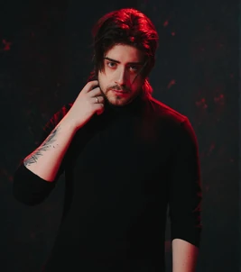

Cellbit
Rafael Lange, mais conhecido como Cellbit, é um criador de conteúdo nas plataformas YouTube e Twitch.
Ele é o criador do universo de Ordem Paranormal, atuando como roteirista e mestre no RPG de mesa, e também como diretor criativo do jogo Enigma do Medo, que é ambientado no mesmo universo.
Como mestre no RPG de mesa, Cellbit é responsável pela atuação de todos os personagens não-jogáveisda série. Ele também é o intérprete de Kian, após o mesmo se tornar um
Cellbit

Nome
Nascimento
Ocupação
- Streamer
- Criador de conteúdo
- Diretor criativo
Curiosidades
- Cellbit já interpretou um personagem não-canônico no universo de Ordem em um dos episódios do podcast Balela. Ele interpretou um personagem homônimo ao lado de Zero e Calango, tendo Della como mestre.
- Além de diretor criativo, Cellbit também fez uma pequena participação na dublagem de Enigma do Medo, dublando um agente coadjuvante não nomeado.
Personagens
Estes são alguns dos personagens que Cellbit, como mestre, interpreta ao longo da série, em ordem alfabética:
- A
- † A Artista
- † A Fazendeira
- † A Ferreira
- † A Garçonete
- A Magistrada
- Aaron
- † Adágio Magal Benza
- Adrian Vurtoren
- † Agarim
- Agatha Volkomenn
- Este personagem está amalgamado ao Anfitrião Aeneas
- Alberta Magal Benza
- † Alceu
- † Alê
- † Alexia Grifo
- † Alef Freneza
- Alfredo Leone
- † Alvira
- Amaury Baptiste
- † Amora Aleno
- † Ana Delgado dos Santos
- † Ana Júlia
- † Anderson
- Angelina Florence
- † Alonzo Leone
- † Álvaro Augusto
- Este personagem está amalgamado ao Anfitrião Amphitruo
- † Ângela Leone
- † Antigo Porteiro
- † Antigo Hoteleiro
- † Anthony Scelto
- Antonella Leone
- Argano
- Este personagem está amalgamado ao Anfitrião Arnaldo Fritz (Parasita de Culpa)
- Arnold Strolley
- Arthur Cervero ("Torre" de OSNF)
- B
- † Barnabé Aleno
- † Bartô Castello
- Benjamin Parker
- Bernadette Leroy
- Bernardo (Carpazinha)
- Bernardo (doutor)
- ? Blaire
- ? Bolinho
- † Brando Leone
- † Bruno
- † Brúlio Cervero
- Brian Medina
- Bryan
- Bisteca
- C
- Cachorros Selvagens
- Cães de Caça
- † Caio Teles
- † Caíto Rocha
- † Caleb Onell
- Calisto Besatt
- Calvin Abreu
- Camareiro
- Camilo
- Carla Leone
- Carol
- † Carrara
- Cartier Dubois
- † Cascadia
- Cascavel
- Cassiano Menta
- † Cavalcante Bueno
- † Celestino Vurtoren
- † Chiara Leone
- † Chispa
- Chizue Akechi
- Chloe Grey
- † Cibele (A Enfermeira)
- Cícero Gominho
- † Cindy Lopes
- † Clara
- Clarissa Leão
- † Cleo Brisa
- Cléria
- Cobras
- † Cornelius
- † Cravado
- Cristal
- † Cristino
- D
- † Dagan
- ? Dalmo Magno
- Dani
- Dante ("Melodia" de OPD)
- † Dario Leone
- Davi Pomar
- Delano Martin
- Désirée Menet
- † Diretor da Produção
- Donisvaldo Magal Benza
- Dono do Carpazinha Impressora
- Douglas
- E
- ? Edimeia Soares
- Eduarda Flom
- Eduardo Charuto
- Elizabella
- Eliziel
- Eloy Furtado
- † Elza Verlaz
- Emília
- † Emmanuelle Adrien
- † Enzo Leone
- ? Eriberto Viamão
- † Eric Jour
- † Erika
- ? Escarlata
- † Estevan
- † Estrela
- Eusébio Teixeira
- Evandro Eiland
- F
- Fabrizio Leone
- Felipe Firmino
- Flávio Brotto
- † Franco
- Frederico Mare
- Este personagem está amalgamado ao Anfitrião Francisca Parker
- Francisco Oblito
- G
- † Gambá
- † Gabriel Opspor
- Geraldo (fazendeiro)
- Geraldo (lojista)
- Geraldo Schmia
- Geraldinho
- † Getúlio
- † Graça Scelto
- † Gregório Igorovich
- † Giovanni Opspor
- Giuseppe Leone
- † Gregory
- † Gonzales Medina
- † Gustavo
- † Gustavo Dohmer
- H
- † Harpia
- Helen Magno
- Helena Gama
- Este personagem está amalgamado ao Diabo Henri (OPD)
- Hito
- Hugo Longo
- I
- Ian Suna
- Iara Suna
- † Ike
- † Ivan
- Ivete Beicur
- J
- Jason Bloom
- Javalis
- Jefferson Nemiera
- Jennifer (gata)
- † Jennifer (vaca)
- Jeremias
- ? Jerson da Silva
- Jéssica
- Jiro Yukami
- Joana
- João Halberto
- † John Noble
- † Jonas
- ? Jonas Aguiar
- † Jorge (bombeiro)
- † Jorge (ocultista)
- † José
- † Josivaldo
- Joto
- † Jovan Savik
- † Juarez Pontes
- † Jushur
- K
- Karen Brown
- † Karise
- Kellen Kankum
- Kian
- Kiko
- † Kish
- † Kurt Hemmis
- L
- Layla Silva
- † Leandro Hans
- Letícia Mantra
- Letício (Gasparzinho Lanches)
- Letício (motorista)
- Este personagem está amalgamado ao Anfitrião Liber
- † Lívia Lima
- † Lorenzo Leone
- † Lorraine Orleans
- Luan Magal Benza
- † Lucas
- † Lúcio (Assombrado)
- ? Ludismila Soares
- Ludovic Toussaint
- Lupi
- M
- Madalena
- Maíra Suna
- † Mamiza
- Mandy
- Manu Magno
- Marc Menet
- Marcela Geleerd
- † Marcelo
- Marcelo Escócio
- † Marcellus
- † Marco Leone
- † Marcos Front
- Margot Renaud
- Mashda
- Matheus Geleerd
- Matias
- † Mathias Bergman
- Mariana
- † Matias Dennis
- Maxime Auclair
- Mia
- † Miasma
- Micael Cruzes
- † Miguel Castello ("Praia" e "Prosopagnosia" de OSNI)
- † Miguel Hernandez
- Monique Lavigne
- Montel Florence
- † Morato Vertaler
- † Mosto
- † Murilo (Gaudérios)
- † Murilo (o Coletor)
- N
- Nanci
- † Nando Salles
- Naomi Akechi
- ? Nathaniel
- Návia Eiland
- † Nergal
- † Nero
- † Nestor Scelto
- † Nina
- Noelle Aries
- † Nubi
- O
- O Anfitrião
- † O Cozinheiro
- O Diabo
- † O Doutor
- † O Ferreiro
- † O Guarda
- † O Hoteleiro
- † O Jardineiro
- † O Mineiro
- † O Minerador
- † O Porteiro
- † O Taverneiro
- † O Tecelão
- † Olavo Costa
- Olivia Lefleur
- † Otávio Nemiera
- † Oriel Renaud
- † Orpheu
- † Osvaldo (Ocultista)
- Osvaldo (doutor)
- P
- Paçoqueiro
- Pâmela Morgana
- ? Park Jae-Yoon
- † Pasquale
- † Patrizia Leone
- Paulo Machado
- Pedro Nemiera
- † Pete
- Este personagem está amalgamado ao Anfitrião Plautus
- Plínio (motorista do furgão)
- ? Pomba
- † Produção Rosa
- † Produção Roxo
- † Produção Verde
- † Produção Vermelho
- † Produção Violeta
- R
- † Rana
- † Raziel
- Regina Cruzes
- Renan Geleerd
- † Ricardo Almeida (Alexsander Kothe)
- † Ricardo
- † Rodolfo
- † Roberta Leone
- † Roberto Lutrijo
- Rodrigo
- Rogério (cachorro do Geraldo Schmia)
- Roy Stevens
- Ryan Ronaldo
- Ryder Staten
- S
- † Sabara
- Salvatore
- † Samantha Hale
- Samuel Norte
- † Satanás
- Senhor Veríssimo
- Este personagem está amalgamado ao Anfitrião Silenus
- Stella Green
- Stephanie Rosseau
- Stevan
- † Sidney Souza
- T
- † Tarrafa
- Terezinha Gominho
- † Tereza
- Tim Flom
- † Thiago Fritz ("O Sanatório", "Aracnofobia", "Hotel" e "Manancial" de OSNF)
- † Torvo
- † Tristan Monteiro
- Troy Walker
- V
- † Vagner Freitas
- Valéria Nemiera
- † Velisar
- Este personagem está amalgamado ao Kian Veritus
- † Verônica
- ? Vicente Santos
- † Vicenzo
- Victoria Opspor
- Victor Rott
- Vilmo Brotto
- † Vinicio Ludos
- Vitor Nemiera
- W
- † Wallace
- Walter
- Wesleynardo
- William Bonantos
- Y
- Yan
- Yves Moreau
- Z
- † Zéfero